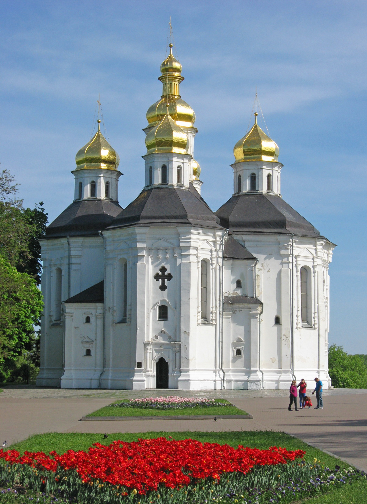

Чернігів — місто легенд
Вітаємо на сайті, присвяченому одному з найстаріших міст Київської Русі. Місту, де історія оживає на кожному кроці.

Чому Чернігів особливий?
Чернігів — одне з найстаріших і найкрасивіших міст України. Воно розташоване на півночі країни на березі річки Десна. Історія міста налічує понад тисячу років. Чернігів був важливим культурним, політичним і торговим центром ще за часів Київської Русі. Сьогодні це сучасне місто, яке поєднує багату історичну спадщину з комфортним життям для мешканців. Місто вперше згадується в літописах у IX столітті. У той час Чернігів був одним із найбільших і найвпливовіших міст Київської Русі. Тут правили князі, будувалися величні храми, розвивалася торгівля та культура. Завдяки своєму розташуванню місто було важливим торговим пунктом між різними регіонами. Чернігів відомий великою кількістю історичних пам’яток. Однією з найвідоміших є Спасо-Преображенський собор, який був побудований у XI столітті. Це один із найдавніших храмів України, що зберігся до наших днів. Також у місті знаходиться Катерининська церква — один із символів Чернігова. Її красиві золоті куполи можна побачити здалеку. Ще одним важливим місцем є Чернігівський Дитинець, який також називають Валом. Це історичний центр міста, де знаходяться старовинні гармати, пам’ятники та красиві алеї для прогулянок. Звідси відкривається гарний вид на річку Десна та навколишні пейзажі. Чернігів також славиться своїми природними місцями. Болдині гори — це одне з найвідоміших історичних і природних місць міста. Тут розташовані стародавні кургани та Антонієві печери, які були створені ще в XI столітті. Це унікальне місце, яке приваблює туристів і дослідників історії. Сучасний Чернігів — це затишне місто з парками, університетами, музеями та театрами. Тут проходять різні культурні заходи, фестивалі та виставки. Місто активно розвивається, але при цьому зберігає свою історичну атмосферу та традиції. Чернігів є важливою частиною історії України та культурною спадщиною нашої країни. Його стародавні храми, красиві парки та цікава історія приваблюють туристів з різних куточків України та світу. Для мешканців це не просто місто — це рідний дім, місце з багатою історією та особливою атмосферою.